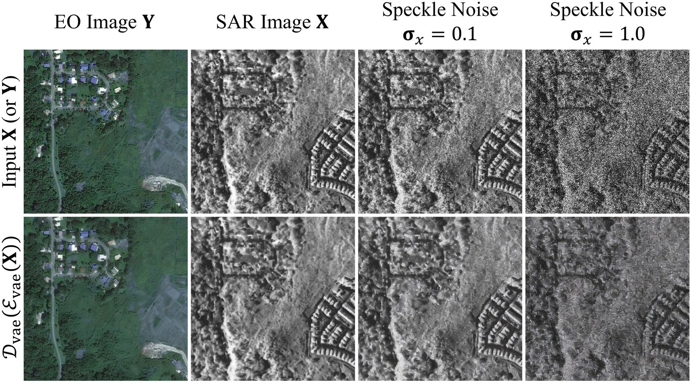
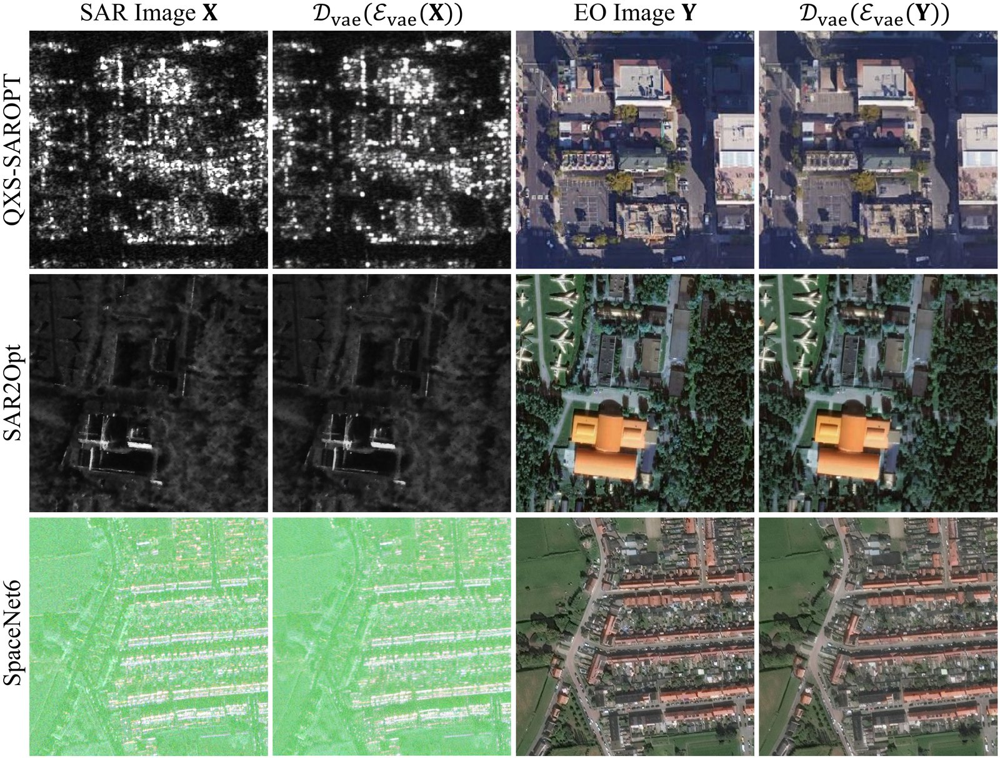
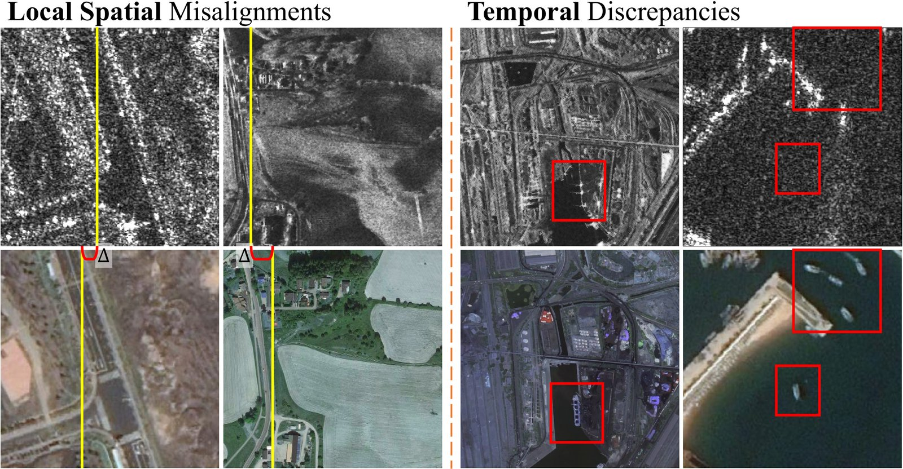
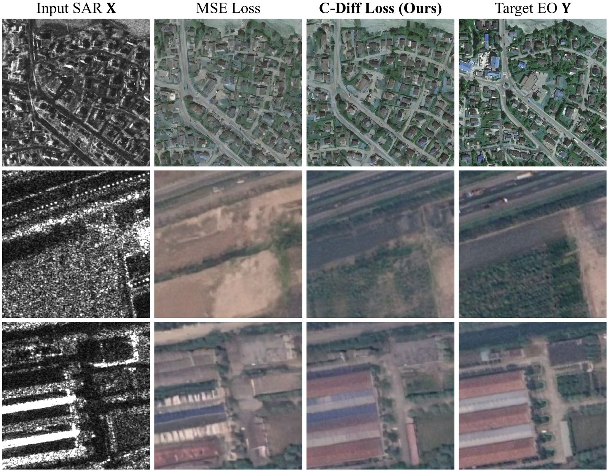
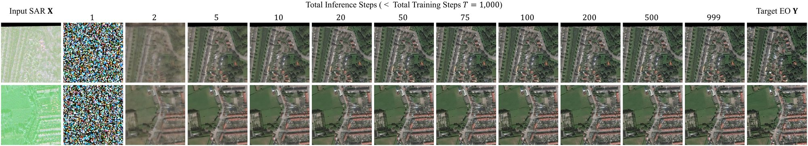
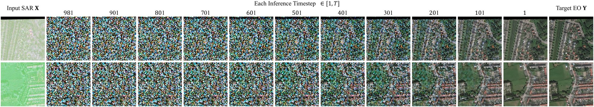

Start from pretrained diffusion, not from scratch
A latent diffusion model pretrained on natural images, fine-tuned for SAR-to-EO translation with a confidence-guided loss.

SAR in, EO out
Input SAR, the SET method cBBDM and C-DiffSET on 21 scenes from SpaceNet6, SAR2Opt and QXS-SAROPT. Select a tile to compare it with C-DiffSET.
Use the arrows or the ← → keys to change scene · click a tile to open the comparison sliderSwipe or use the arrows to change scene · tap a tile to open the comparison slider
All methods, same scenes
Nine baselines and C-DiffSET on the same SAR input, at the resolution embedded in the paper’s comparison figures. Select a tile to compare it with the target EO image.
Use the arrows or the ← → keys to change scene · click a tile to open the comparison sliderSwipe or use the arrows to change scene · tap a tile to open the comparison slider
Paper figures
The shared SAR–EO latent space, confidence maps, misalignments in paired data, the C-Diff loss and the number of sampling steps.














Quantitative results
C-DiffSET is best in all five metrics on SAR2Opt, SpaceNet6 and QXS-SAROPT.
| Method | Venue | SAR2Opt | SpaceNet6 | ||||||||
|---|---|---|---|---|---|---|---|---|---|---|---|
| FID↓ | LPIPS↓ | SCC↑ | SSIM↑ | PSNR↑ | FID↓ | LPIPS↓ | SCC↑ | SSIM↑ | PSNR↑ | ||
| GANs | |||||||||||
| Pix2Pix | CVPR 2017 | 196.87 | 0.426 | 0.0006 | 0.216 | 15.422 | 124.55 | 0.256 | 0.0102 | 0.522 | 19.357 |
| CycleGAN | ICCV 2017 | 139.72 | 0.425 | 0.0022 | 0.224 | 14.931 | 114.81 | 0.274 | 0.0097 | 0.493 | 17.798 |
| SAR-SMTNet† | TGRS 2023 | 160.87 | 0.479 | 0.0011 | 0.219 | 14.661 | 118.96 | 0.294 | 0.0103 | 0.483 | 17.032 |
| CFCA-SET† | TGRS 2023 | 152.27 | 0.430 | 0.0009 | 0.223 | 15.183 | 164.78 | 0.279 | 0.0097 | 0.498 | 18.297 |
| StegoGAN | CVPR 2024 | 144.54 | 0.398 | 0.0034 | 0.237 | 15.624 | 75.12 | 0.244 | 0.0106 | 0.516 | 18.958 |
| LDMs | |||||||||||
| BBDM | CVPR 2023 | 94.72 | 0.473 | 0.0005 | 0.234 | 15.131 | 81.86 | 0.302 | 0.0019 | 0.217 | 17.678 |
| ControlNet | ICCV 2023 | 81.04 | 0.423 | 0.0005 | 0.216 | 14.461 | 106.59 | 0.392 | 0.0027 | 0.178 | 14.085 |
| Uni-ControlNet | NeurIPS 2023 | 80.81 | 0.421 | 0.0004 | 0.215 | 14.384 | 91.14 | 0.321 | 0.0037 | 0.183 | 14.333 |
| DGDM | ECCV 2024 | 156.12 | 0.541 | 0.0004 | 0.273 | 15.568 | 238.37 | 0.438 | 0.0015 | 0.253 | 17.124 |
| cBBDM† | arXiv 2024 | 97.64 | 0.394 | 0.0022 | 0.285 | 16.591 | 72.77 | 0.243 | 0.0079 | 0.254 | 19.033 |
| C-DiffSET (Ours) | – | 77.81 | 0.346 | 0.0035 | 0.286 | 16.613 | 37.44 | 0.142 | 0.0151 | 0.567 | 21.022 |
† SET-specific methods without official code, re-implemented from their technical descriptions. All LDM-based methods, including C-DiffSET, are initialised with the same Stable Diffusion v2.1 weights. On SpaceNet6, C-DiffSET lowers FID from 72.77 (cBBDM, the next best) to 37.44.
| Method | QXS-SAROPT | ||||
|---|---|---|---|---|---|
| FID↓ | LPIPS↓ | SCC↑ | SSIM↑ | PSNR↑ | |
| GANs | |||||
| Pix2Pix | 196.89 | 0.454 | 0.0000 | 0.247 | 14.924 |
| CycleGAN | 195.38 | 0.455 | 0.0001 | 0.251 | 14.977 |
| SAR-SMTNet† | 117.69 | 0.435 | 0.0003 | 0.260 | 14.491 |
| CFCA-SET† | 79.06 | 0.406 | 0.0006 | 0.273 | 15.094 |
| StegoGAN | 85.60 | 0.391 | 0.0019 | 0.280 | 15.580 |
| LDMs | |||||
| BBDM | 65.15 | 0.522 | 0.0004 | 0.238 | 13.946 |
| ControlNet | 22.39 | 0.434 | 0.0001 | 0.257 | 14.062 |
| Uni-ControlNet | 22.48 | 0.437 | 0.0002 | 0.257 | 13.985 |
| DGDM | 147.23 | 0.634 | 0.0001 | 0.288 | 11.564 |
| cBBDM† | 69.47 | 0.420 | 0.0023 | 0.304 | 16.248 |
| C-DiffSET (Ours) | 18.15 | 0.293 | 0.0108 | 0.372 | 18.077 |
On QXS-SAROPT, FID drops from 22.39 (ControlNet, the next best) to 18.15.
Ablation: pretrained LDM and C-Diff loss Tables 3 and 8
| Pretrained LDM | Loss function | SAR2Opt | SpaceNet6 | ||||||||
|---|---|---|---|---|---|---|---|---|---|---|---|
| FID↓ | LPIPS↓ | SCC↑ | SSIM↑ | PSNR↑ | FID↓ | LPIPS↓ | SCC↑ | SSIM↑ | PSNR↑ | ||
| MSE | 98.98 | 0.39 | 0.001 | 0.26 | 15.82 | 60.26 | 0.23 | 0.011 | 0.43 | 18.16 | |
| ✓ | MSE | 78.14 | 0.36 | 0.003 | 0.28 | 16.46 | 40.62 | 0.16 | 0.014 | 0.52 | 20.29 |
| ✓ | C-Diff | 77.81 | 0.34 | 0.004 | 0.29 | 16.61 | 37.44 | 0.14 | 0.015 | 0.57 | 21.02 |
Starting from the pretrained LDM lowers FID from 98.98 to 78.14 on SAR2Opt and from 60.26 to 40.62 on SpaceNet6 with the same MSE loss; the C-Diff loss then improves every metric on both datasets.
| Pretrained LDM | Loss function | QXS-SAROPT | ||||
|---|---|---|---|---|---|---|
| FID↓ | LPIPS↓ | SCC↑ | SSIM↑ | PSNR↑ | ||
| MSE | 29.04 | 0.407 | 0.0006 | 0.279 | 14.647 | |
| ✓ | MSE | 19.99 | 0.297 | 0.0094 | 0.364 | 17.736 |
| ✓ | C-Diff | 18.15 | 0.293 | 0.0108 | 0.372 | 18.077 |
On QXS-SAROPT, starting from the pretrained LDM lowers FID from 29.04 to 19.99 with the same MSE loss; the C-Diff loss then improves every metric.
Computational cost Table 7
| Method | Params. (M) | FLOPs (G) | Memory (MB) | Time (s) |
|---|---|---|---|---|
| GANs | ||||
| Pix2Pix | 54.41 | 24.22 | 464.12 | 0.06 |
| CycleGAN | 7.84 | 140.43 | 398.38 | 0.08 |
| SAR-SMTNet | 2.15 | 615.40 | 2626.98 | 0.22 |
| CFCA-SET | 26.80 | 98.98 | 431.86 | 0.10 |
| StegoGAN | 13.15 | 227.49 | 461.14 | 0.11 |
| LDMs | ||||
| BBDM | 949.56 | 2122.44 | 6147.88 | 3.13 |
| ControlNet | 1312.72 | 2231.03 | 7567.83 | 4.50 |
| Uni-ControlNet | 1519.18 | 2295.20 | 8382.00 | 4.95 |
| DGDM | 959.03 | 2161.25 | 6184.45 | 1.47 |
| cBBDM | 949.58 | 2122.49 | 6147.93 | 3.15 |
| C-DiffSET | 949.58 | 2122.49 | 6148.09 | 3.27 |
C-DiffSET has the parameters and FLOPs of cBBDM (949.58 M and 2122.49 G) and takes 3.27 s per 512 × 512 image.
Share the latent, weight by confidence
![C-DiffSET framework. Training: the frozen image encoder maps the SAR image X and the EO image Y to latents; noise is added to the EO latent in the forward process; the denoising U-Net, fed the concatenated noisy EO and SAR latents, the timestep and the CLIP embedding of the prompt Electro-Optical Image, predicts the noise and a confidence map, optimised with the C-Diff loss. Inference: starting from Gaussian noise, the U-Net denoises step by step conditioned on the SAR latent, and the image decoder produces the EO prediction.](static/images/framework_full.jpg)
- 01One latent space for SAR and EO. The frozen VAE of the pretrained LDM embeds both images; the SAR latent is concatenated channel-wise with the noisy EO latent, keeping pixel-wise correspondence.
- 02Fine-tuned, not trained from scratch. The U-Net starts from Stable Diffusion v2.1 weights, with the fixed prompt “electro-optical image” as a stable conditioning signal.
- 03Confidence-guided diffusion loss. A predicted confidence map weights the noise error pixel-wise (β-NLL style), so regions where objects appear or disappear between acquisitions are down-weighted.
BibTeX
@article{do2026cdiffset,
title={C-diffset: Leveraging latent diffusion for sar-to-eo image translation with confidence-guided reliable object generation},
author={Do, Jeonghyeok and Lee, Jaehyup and Lee, Seungchul and Kim, Munchurl},
journal={IEEE Transactions on Circuits and Systems for Video Technology},
year={2026},
publisher={IEEE}
}